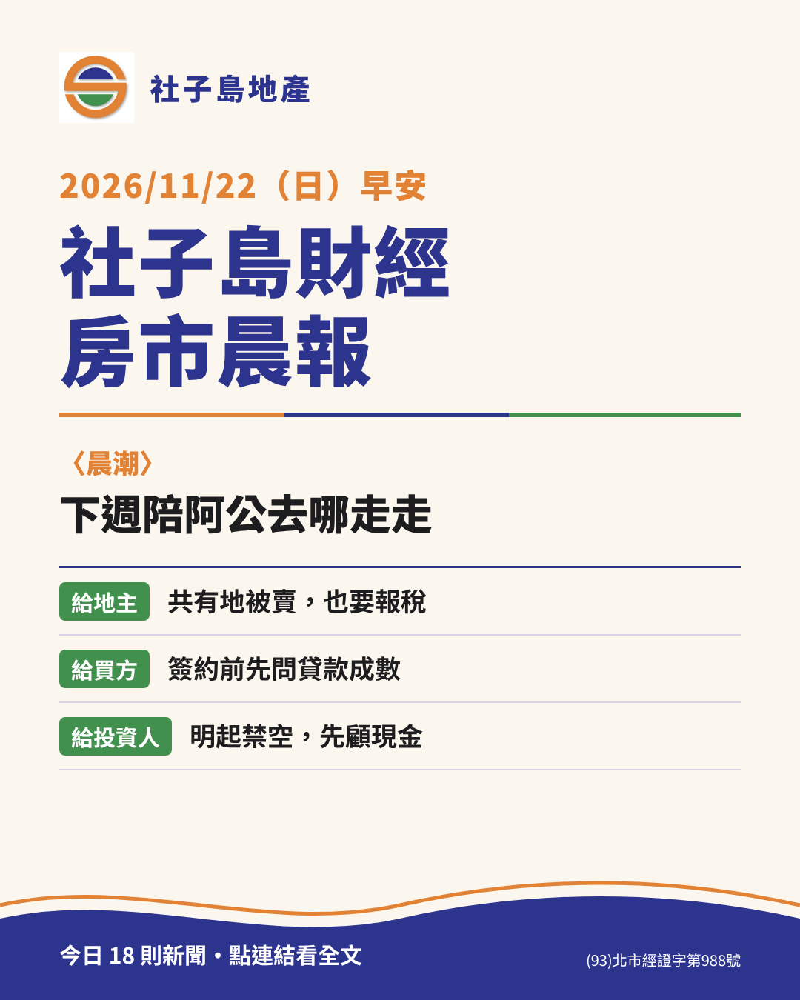

2026/11/22 (日) 早安
社子島財經房市晨報｜下週陪阿公去哪走走
台股寫下史上最大單週跌點，金管會宣布明天（23日）起禁止平盤以下放空；可是這個週末，北士科的輝達總部、台中14期的7字頭、新竹的頭期款，還是有人在認真算。週日新聞少，今天 18 則，配一杯茶慢慢讀，點標題就能讀原文。
〈潮汐表〉今天的三道潮水
- 給地主共有土地被多數共有人賣掉，沒簽名的人也要報房地合一稅；先問清楚自己的那一份。
- 給買方台中七期有人交屋才發現只能貸三成；簽約前先請銀行估價、問成數。
- 給投資人明天起禁止平盤以下放空；政策能止血，但先看清自己的槓桿與現金。
〈晨潮〉一週回顧＋預告
下週陪阿公去哪走走
昨天在公園，阿公拍拍膝蓋問我們：「這禮拜恁講碼頭的日頭、浮汕的名、關渡的鳥仔、島頭的日頭落山，閣講繼承。下禮拜，欲閣帶阮去佗位行行咧？」阿公，下禮拜的路線我們已經排好了。先陪您把這一週走過的路，再回頭看一遍。
週一，我們坐在福安碼頭等夕陽，冬天太陽往觀音山那一側落下，早一點到，才搶得到好位子。週二，學看潮汐表：大潮、小潮跟著月亮走，河口的水位一天兩漲兩退。週三，說「浮汕」：河裡浮出來的沙洲，就是這座島最早的樣子。週四，跨過基隆河到關渡自然公園，看冬天來作客的水鳥。週五，走到島頭公園，看淡水河和基隆河在眼前會合，一起送走夕陽。週六，回到正事：繼承法要改了，有沒有子女、有沒有遺囑，決定一塊地最後怎麼分。
一週五天輕鬆、一天正事，這是我們試著走的新節奏。很多讀者告訴我們，原來每天經過的堤防、碼頭和老地名，背後有這麼多故事。也有人說，正事那天最實用。我們會繼續這樣排：平常陪您在島上走走，遇到大事，第一時間用白話講清楚。
下一週的路線，先跟阿公報告：週一，騎上繞島一圈的自行車道，看看從哪裡起騎、一圈要多久；週二，冬天的候鳥，牠們從哪裡來、什麼時候最好看；週三，福安里、富洲里，這兩個里名是怎麼來的；週四，到洲美看那片田，北士科旁邊還留著的綠色；週五，「社子島看夕陽」第二站，福安碼頭以外的堤邊夕陽。
下週〈晨潮〉路線
- 週一｜繞島一圈自行車道
- 週二｜冬天的候鳥
- 週三｜福安里、富洲里的由來
- 週四｜洲美的田
- 週五｜社子島看夕陽②：福安碼頭以外的堤邊夕陽
這個禮拜股市很不平靜，台股寫下史上最大單週跌點，金管會也宣布明天起禁止平盤以下放空。我們不談明天會漲會跌，只想說一句：土地和房子是一家人要住、要傳的東西，越是外面風大，越要把自己的那一份看清楚。往下滑，是今天的新聞；最後在〈廟口泡茶區〉，阿公在等您。
——社子島地產團隊
主商圈：社子島・北士科・關渡洲美平原1 則
黃仁勳卸任後，輝達北士科總部會不會生變？北市府先前說明簽約主體是輝達在台子公司、履約正常；社子島區段徵收計畫仍在內政部審議，本週沒有新的官方進度
大台北：台北市・新北市・基隆1 則
今天淡水河畔有一場免費的日本小祭典，週日出門走走
其他縣市：新竹・台中・高雄（離台北由近到遠）4 則
晚十年買房，新竹頭期款多出近300萬；台中14期新案仍站7字頭，七期卻有人交屋才發現只能貸三成；高雄老泳池熄燈，地主準備收回土地
稅務與法律實務2 則
共有土地被多數共有人依《土地法》第34條之1賣掉，沒同意的人也要報稅；家中長輩的印章與存摺，交給誰保管要想清楚
土地・區段徵收・地籍清理1 則
繼承沒辦、權屬不清的土地，最後可能被政府代為標售；台南第2批47標只標出2標
都更・危老1 則
高雄六年推24件公辦都更，預估引進民間投資逾2,800億元
全台房市・預售1 則
928檔期連兩年偏冷，預售市場在谷底微微回溫
利率・房貸・資金1 則
美國30年期房貸利率升到7.28%，單週漲幅近期最大；台灣央行12月17、18日理監事會，升不升息仍是房貸族最關心的事
人口・高齡・家戶1 則
聯合報橘世代專題：無房、獨居又有慢性病的長輩，在社區安老最難的是租屋
交通建設與生活1 則
今天清晨仍冷、白天回暖，日夜溫差大；下週二鋒面再來
今日財經大事4 則
台股本週寫下史上最大單週跌點；金管會宣布23日起所有上市櫃股票禁止平盤以下放空、融券保證金成數提高到150%，2015年以來首次；費半一週跌17.13%
〈阿公講古〉
週日早上，天放晴了，風還是冷的。阿公戴上毛帽，慢慢爬上堤防，孫子牽著腳踏車跟在後面。
聽我們念完下禮拜的路線，阿公笑了：「好啊，恁欲帶阮四界去，阮這兩支腳猶走會振動。」
他指著堤下那條長長的路：「阮少年時，騎鐵馬繞島一輾，規路攏是菜園佮魚塭，騎到半路愛停落來食一喙水。彼陣無這款平平的路，攏是土仔路，落雨就規身軀泥。」
孫子把腳踏車停好，阿公摸摸車座，忽然問：「這馬堤岸頂有自行車道矣。對佗位起騎？繞一輾愛偌久？阮這个年歲，騎會了無？」
阿公的問題，我們明天回答。
〈廟口泡茶區〉
阿公從堤防下來，廟口榕樹下的茶剛好泡開。外面風大的一週，坐下來喝杯熱茶，把心定一定。
這一週，我們聊了買賣、租賃、合建、區段徵收、市地重劃和找地；不管是哪一件，先把您手上的權狀、地號和家裡的情形告訴我們，我們陪您一筆一筆對清楚。
也想問問您：下禮拜要陪阿公騎車繞島，您最喜歡從哪一段騎起？打個電話告訴我們，說不定就寫進明天的晨報。
不急著成交。我們是守在堤邊的人，守著每一塊土地的權益，直到把它交到願意耕耘它的人手上。
📞 歡迎先來電 0922-252-969先通個電話聊聊，再約時間來廟口喝茶。
 掃描 QR code，加 LINE 好友LINE ID：@shezidao💬 加 LINE
掃描 QR code，加 LINE 好友LINE ID：@shezidao💬 加 LINE
社子島地產團隊｜service@shezidao.com.tw
台北市士林區延平北路九段288號
週一至週六 9:30–18:00（週四 9:30–13:30），週日公休📞 來電 0922-252-969
本站由社子島地產開發有限公司經營，為民間不動產資訊網站，非臺北市政府官方網站；政府公告請以臺北市政府與地政局網站為準。
本期新聞由社子島地產團隊自自由時報地產天下、自由藝文網、蕃新聞、安傳媒、經濟日報、中時新聞網、壹蘋新聞網、聯合新聞網、ETtoday新聞雲、工商時報 等來源收集，標題照原文，點擊即可開啟原始報導；新聞依「主商圈 → 大台北 → 其他縣市（離台北由近到遠）→ 稅務與法律實務 → 土地 → 都更危老 → 全國主題」排列，當天沒有新報導的分類不列出。〈晨潮〉回顧之內容為本報 11 月 16 日至 21 日各期〈晨潮〉，出處見各期附註；金管會禁止平盤以下放空措施依聯合新聞網、工商時報報導，實際以金管會公告為準。〈晨潮〉〈阿公講古〉為本團隊之參考意見，不構成投資或法律建議，亦不代表支持任何候選人。〈阿公講古〉的阿公，是我們依島上長輩的身影寫成的人物。